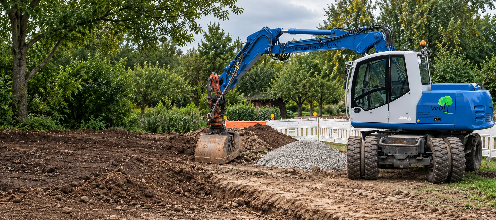
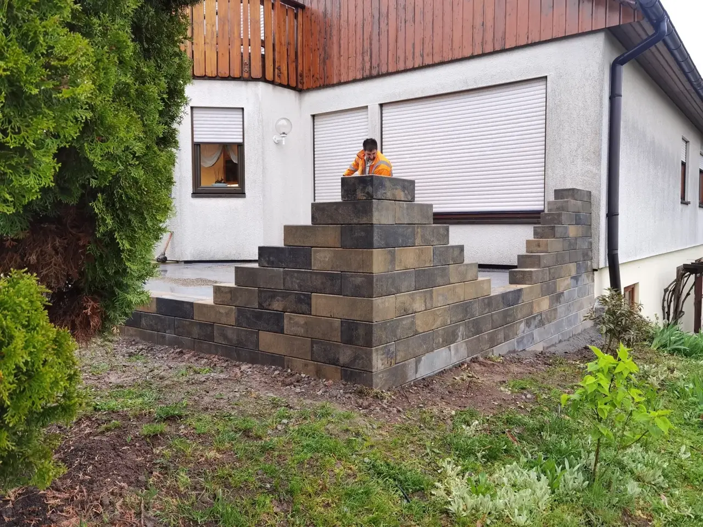

Kurz kennenlernen
Sie erzählen uns von Ihrem Vorhaben, dem Standort und Ihren Wünschen.

Unsere Leistungen
Bau, Tiefbau und Außenanlagen – entdecken Sie, wie wir Sie bei Ihrem Projekt unterstützen können.
Starke Leistungen. Saubere Ergebnisse.
9 Leistungen werden angezeigt.

Rückbau von Gebäuden und Bauwerken.

Fundamente, Gräben und Erdarbeiten.

Mit und ohne Maschine.

Gestaltung von Außenanlagen nach Maß.

Erdarbeiten für Ihre Anschlüsse.

Wege, Zufahrten und Flächenbefestigungen.

Regelmäßige Pflege für gesunde Grünflächen.

Entfernung an betroffenen Eichen.

Fundamente, Bodenplatten und Stützwände.

Natursteinlösungen für Garten und Gelände.
Mehr erfahrenSo arbeiten wir
Sie erzählen uns von Ihrem Vorhaben, dem Standort und Ihren Wünschen.
Wir klären die Anforderungen, besichtigen bei Bedarf vor Ort und erstellen ein individuelles Angebot.
Leistungsumfang und Termin stimmen wir persönlich mit Ihnen ab. Dann kann es losgehen.
Erzählen Sie uns von Ihrem Vorhaben. Wir denken mit und beraten Sie persönlich.